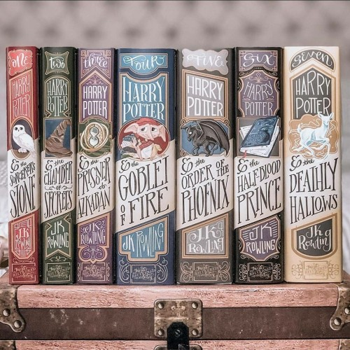
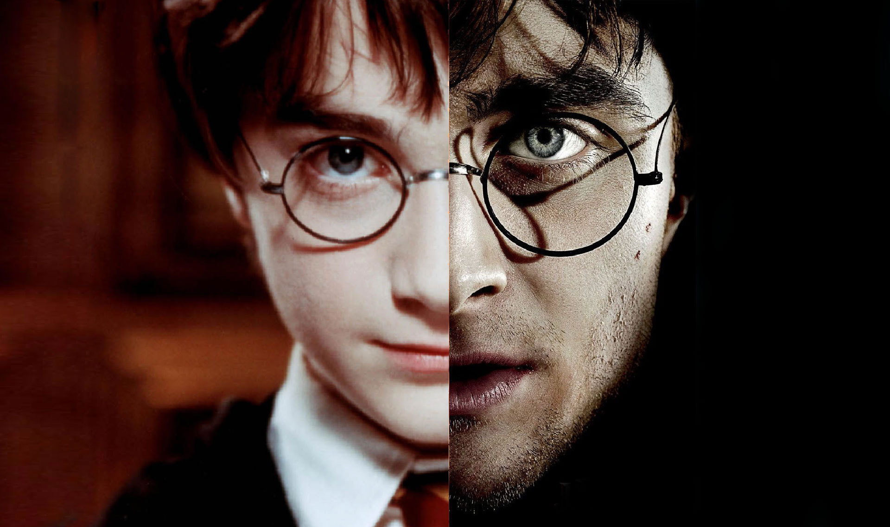
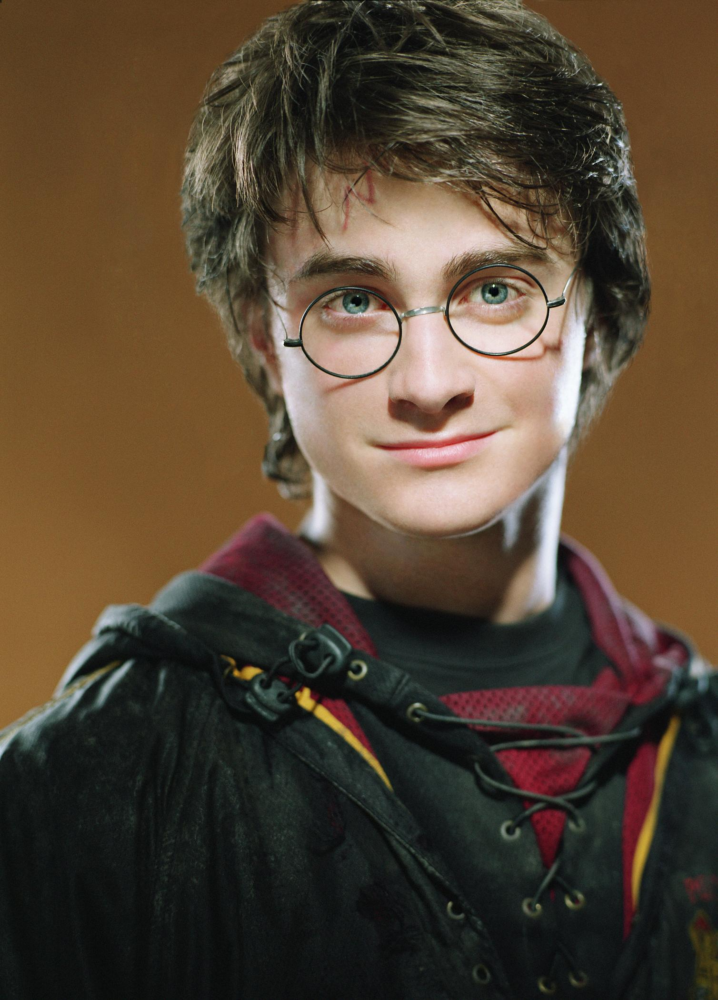
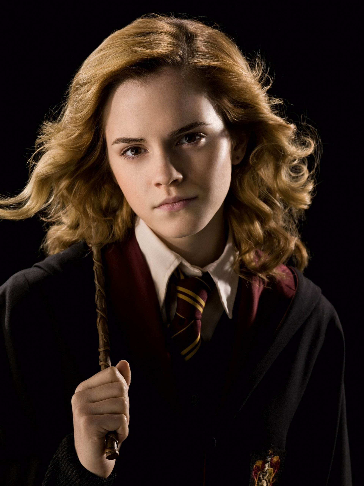
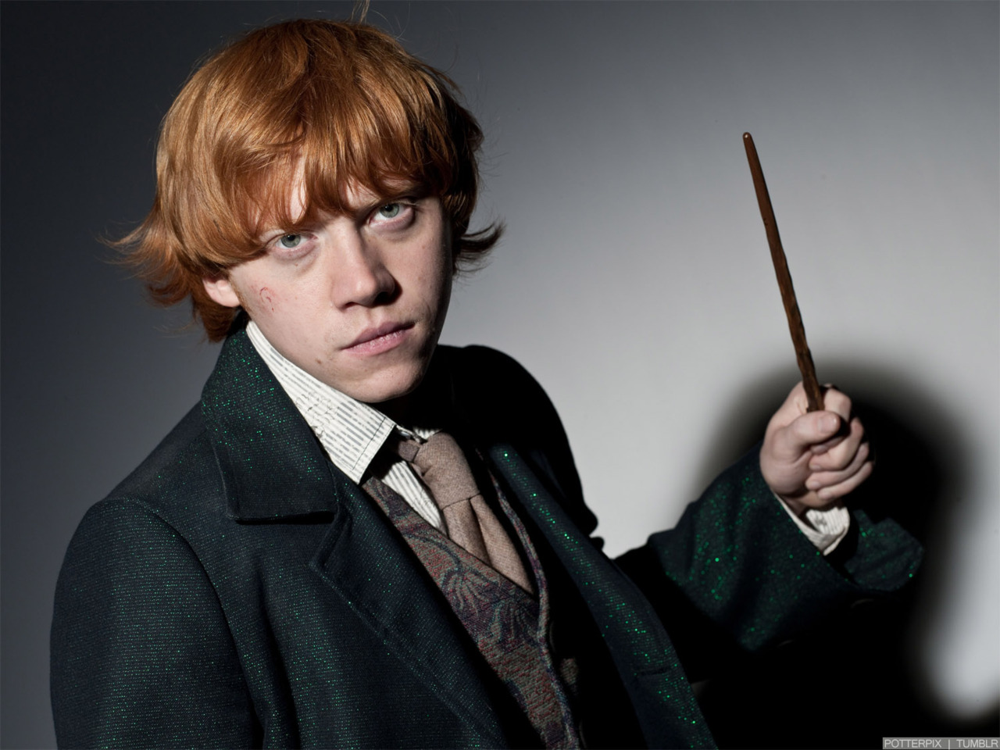
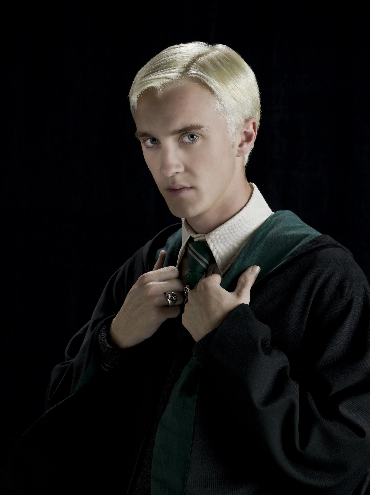
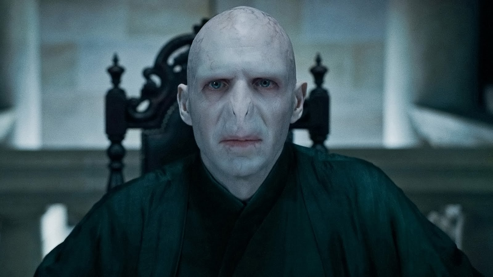
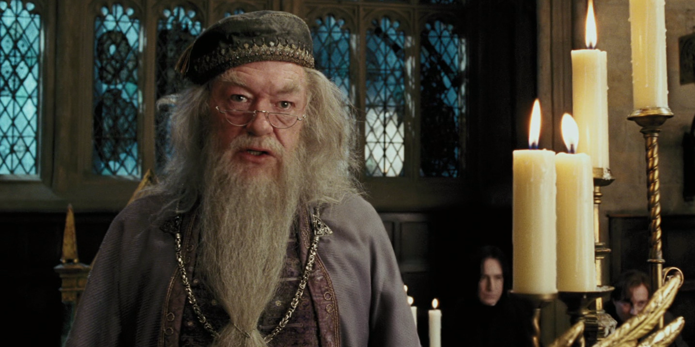

Harry Potter
| Content |
|---|
| 1. Introduction |
| 1.1. Author |
| 1.2. Staggering Facts and Summary |
| 2. Main Characters |
| 2.1. Harry Potter |
| 2.2. Hermione Granger |
| 2.3. Ron Weasley |
| 2.4. Draco Malfoy |
| 2.5. Voldemort |
| 2.6. Dumbledore |
| 3. Citation Page |
Introduction
Author

The author of Harry Potter is Joanne Kathleen Rowling, more commonly known as J.K. Rowling. She is a British author who is widely famous for Harry Potter.
Staggering Facts and Summary
Harry Potter is the best-selling fantasy book series of all time. This franchise and everything that goes with it is believed to have made total sales of over $25 billion. It has been translated into 80 different languages, and has won a number of awards. Harry Potter and the Philosopher’s Stone, the first Harry Potter book, is the best-selling book in the series with 120 million copies sold worldwide. Harry Potter and the Goblet of Fire (fourth book) sold 3 million copies just over the first weekend. Harry Potter and the Half-Blood Prince (sixth book) sold 6.9 million copies in the first 24 hours alone, and The Deathly Hallows (seventh book) is the fastest-selling fiction book in history with 8.3 million copies in the first 24 hours, 96 books per second.
The Harry Potter series is made of seven books . These seven books consist of the many adventures that Harry experiences. It all starts with a timid orphan, Harry Potter being mistreated by the Dursleys, his aunt’s family. Harry Potter gets orphaned as a baby and is told that his parents died in a car crash. Little does he know that this along with all the other things the Dursleys told him about his family were just lies. On his eleventh birthday, Hagrid finally tells him the truth about everything, his parents, Voldemort, and most importantly, his identity as a wizard. He is invited to attend Hogwarts School of Witchcraft and Wizardry, and with Hagrid’s help, he starts a new life at Hogwarts.
Thanks to Hagrid, Harry also learns that Voldemort murdered his parents, and that Harry was the only person to have ever survived an attack by Voldemort. He somehow rebounded the killing curse that Voldemort used on him, and this left Harry with a lightning bolt-shaped scar on his forehead and Voldemort disembodied. He was given the name "The Boy Who Lived" for this very reason and Harry became a celebrated figure in the wizarding community after that day. While staying at Hogwarts, Harry becomes friends with classmates, Ron, and Hermione, and finds a rival in Malfoy. He finds some people that care for him, and some that despise him. Harry faces Voldemort again and again, and his friends assist him to get rid of Voldemort each time.
Main Characters
-
Harry Potter
Harry Potter, the protagonist of this series, is a half-blood wizard who is the son of James, a pure-blood wizard, and Lily Potter, a muggle-born wizard. Harry was orphaned as an infant and lived with his aunt’s family. Rowling describes Harry as having his father’s untidy hair, his mother’s bright green eyes and a lightning bolt-shaped scar on his forehead. Due to the mistreatment he received from the Dursleys, Rowling further described Harry as being small and skinny for his age, and having a thin face and knobbly knees. Throughout the books, Harry is shown to be brave, selfless, impulsive, and modest. All qualities possessed by Gryffindors. He’s an average boy with admirable qualities.
In the 8 Harry Potter films, Harry was played by Daniel Radcliffe , a British actor. Radcliffe’s character as Harry was regarded as the 36th greatest movie character of all time in 2011, and 67th in 2018 by Empire.
-
Hermione Granger
Hermione is one of Harry’s best friends and an exceptionally talented witch. She constantly gets bullied for being a Muggle-born, both of her parents are Muggles. She is also a Gryffindor, which explains her loyalty to her friends. Rowling describes Hermione’s physical appearance in the books as having front buck teeth, bushy brown hair and brown eyes. Some of the personality traits that Hermione was given are her prodigious intellect and cleverness. She is levelheaded, book-smart, and always very logical. Throughout the series, Hermione uses her intelligence to help Harry defeat Voldemort. She often acts bossy but is extremely loyal to her friends. Harry met Hermione for the first time on the train to Hogwarts where Hermione was trying to find Neville’s toad.
Emma Watson played Hermione in all 8 Harry Potter films. Rowling also supported the idea of casting Emma Watson as Hermione. When she was asked whether she thought that the actors chosen suited the characters or not, Rowling said, "Yes, I did. Emma Watson in particular was very, much like Hermione when I first spoke to her, I knew she was perfect from that first phone call." Emma Watson is an amazing British actress and a feminist activist, which makes her an excellent choice for such a powerful role.
-
Ron Weasley
Another one of Harry Potter’s friends, Ron is one of the bravest Gryffindors in the series. Ron is a pure-blood wizard who belongs to the Weasley family . He has six siblings, one younger sister, Ginny, and five older brothers, Bill, Charlie, Percy, Fred, and George. Ron is introduced in the books as tall, thin, and gangling, with freckles, big hands and feet and a long nose. He also has the trademark red hair of the Weasleys. He is known for his humour, loyalty, readiness to defend his friends and his love for food. Ron is perceived as a dynamic character who changes from an insecure boy to a competent young man capable of strategy and leadership. Harry’s first encounter with Ron happens when he is standing at King’s Cross Train Station, where Ron’s family helps him find Platform Nine and Three Quarters.
Throughout his life, Ron is overshadowed by the achievements of his siblings and friends, this gives him an inferiority complex and a need to prove himself. Some of Ron’s qualities in the book serve as foils to Harry’s. While Harry is an orphan who is rich, Ron belongs to a loving but poor family. Harry is famous and is always trying to get rid of the fame, while Ron often gets jealous of the recognition Harry receives.
Rupert Grint , is the actor who portrays Ron Weasley in all eight Harry Potter films. Rowling called Grint "perfect" for the role of Ron. Grint’s portrayal of Ron won him a Satellite Award in the category of "Outstanding New Talent" and a Young Artist Award for "Most Promising Young Newcomer".
-
Draco Malfoy
Draco Malfoy is a foil to Harry who belongs to the Slytherin house . He is characterised as an arrogant, cowardly bully who believes that pure blood wizards are superior and should be the only ones who deserve to get education at Hogwarts. Throughout the books, Malfoy bullies Hermione for being a Muggle-born and Ron for being poor. This is the main reason for Harry’s hatred towards Malfoy. Harry’s first encounter with Malfoy happened at Madam Malkin’s where they were both buying robes for school.
Rowling describes Malfoy’s appearance in the books as a tall, slender boy with a pale, pointed face, sleek blond hair and ice grey eyes. He is the typical spoiled, rich brat who believes that his family’s wealth and social status give him the right to bully those inferior to him. Malfoy gets his arrogance from the fact that he belongs to a rich, pure-blooded family. He is the son of Lucius and Narcissa Malfoy. Along with being a spoiled brat, Malfoy is also a cunning user of magic.
Tom Felton played Draco Malfoy in the 8 Harry Potter films. He won the Disney Channel’s Kids Awards for Best DVD, and the MTV Movie Award for Best Villain for his portrayal as Malfoy.
-
Voldemort
Lord Voldemort also known as Tom Marvolo Riddle is the main antagonist of the Harry Potter novels. He is the archenemy of Harry Potter, who according to a prophecy has "the power to kill Voldemort". Voldemort tried to kill Harry as a baby, an event that left him disembodied. Nearly everyone is scared to utter Voldemort’s name, and instead refers to him with names such as "You-Know-Who", "He Who Must Not Be Named" or "The Dark Lord". Voldemort is obsessed with blood purity and aims to get rid of all people who are not pure blooded and to conquer both the Muggle and wizarding world. He is the leader of the Death Eaters, a group of evil witches and wizards who have the same beliefs as Voldemort. He is also the last descendant of Salazar Slytherin, one of the four founders of Hogwarts School of Witchcraft and Wizardry.
Rowling described Voldemort’s appearance as having pale skin, a chalk-white, skull-like face, snake-like slits for nostrils, red eyes, cat-like slits for pupils, a skeletally thin body, long, thin hands with unnaturally long fingers, and no hair or lips. Tom Marvolo Riddle, the younger version of Voldemort was handsome and tall with pale skin, jet black hair, and dark brown eyes. He got his monstrous state from creating Horcruxes and dividing his souls. Rowling also described Voldemort as "the most evil wizard for hundreds and hundreds of years". He is a raging psychopath who has a fear of death.
Voldemort was played by several different characters in the eight Harry Potter films including Richard Bremmer and Ralph Fiennes.
-
Albus Dumbledore
Albus Dumbledore, the headmaster of Hogwarts School of Witchcraft and Wizardry, is the closest figure to a parent that Harry met after being orphaned. In the books, Dumbledore is a tall and thin man, with silver hair and beard that is so long that it can be tucked into his belt. He has a very long and crooked nose, long and skillful fingers and eyes that are a brilliant, soul-piercing shade of blue. He wears half-moon spectacles and a colourful array of robes, ranging from purple to bright orange.
Some of the qualities given to Dumbledore are being benevolent, wise, and a good wizard. He is perceived as the only wizard Voldemort truly fears and is one of the few people who are able to call Voldemort by his name. He is the founder and the leader of the Order of the Phoenix, an organisation that is dedicated to fighting Lord Voldemort. Dumbledore has a deep capacity for love and constantly teaches Harry that love is the greatest magic of all. He believes in second chances and is always trying to find the good in everyone. He is highly perceptive and emotionally intelligent which allows him to understand people.
Albus Dumbledore is played by Richard Harris in the first two films. After Harris’s death, Michael Gambon played this role in the remaining six films.
Citation Page